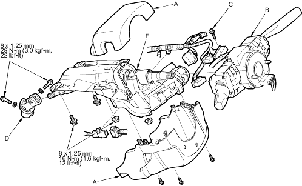

Steering
Steering Column Removal and Installation
|
17-9 |
|
SRS components are located in this area. Review the SRS component locations (see page 23-23), precautions and procedures (see page 23-25) in the SRS section before performing repairs or service.
Removal
- Disconnect the negative cable form the battery.
- Remove the driver's airbag and the steering wheel (see page 17-6).
- Remove the column covers (A).

- Remove the combination switch assembly (B) from the steering column shaft by loosening a screw (C) on the top of the combination switch.
- Disconnect the 2P, 6P, and 7P connectors from the ignition switch.
- Disconnect the steering joint (D), and remove it from the column shaft.
- Remove the steering column (E) by removing the attaching nuts and bolts.